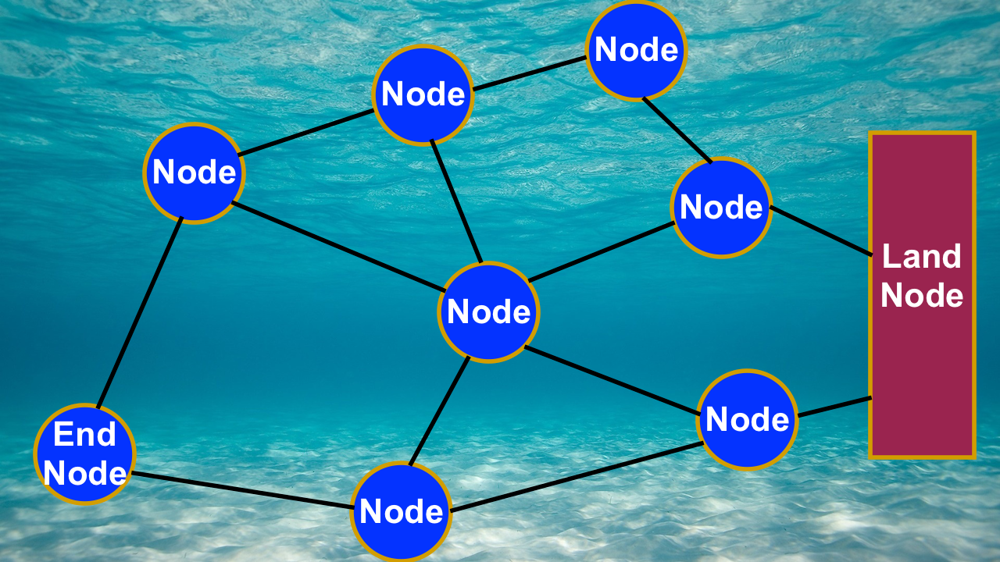

Problem Statement and Proposed Solution
Currently, to monitor data from ocean probes and sensors out in the deep sea requires access to an expensive satellite transmission network such as Immersat. Along with having very slow transmission speeds, the amount of data collected is very low compared to the outrageous prices that using satellite internet costs.
'Buoy Mesh Hack' is a helpful System built for retrieving data from the ocean using sensors, transmitters, receivers, and buoys. Each buoy transmits data through the air to the surrounding buoys, creating a mesh network of data that eventually leads to a master tower situated on the mainland.
We are excited to present to you, 'Buoy Mesh Hack'. We hope this will enable researchers to be able to receive various data from the vast ocean as well as check for patterns throughout time at an affordable price.
How it Works
The Idea
Mesh Networking is an easy way to extend the range of a particular signal. Because sensors that are far away from land cannot receive LTE signal, Mesh Networking is one of the only cost effective and scalable ways to communicate data over long distances.
The Buoy Mesh Network Hack works by using nodes to transmit data and pictures amongst devices themselves. This data can then be relayed back to a tower located on the mainland.

To keep costs low, we made the project parts easily source able. A single buoy can be build for around or under $75! This is much cheaper than commercial solutions and using using expensive and slow satellite networks such as Immersat.
Components
- Raspberry Pi
- Waterproof Tupperware Container
- HD Webcam
- 6V 2W Solar Pannel
- 10,000Mah Battery Bank
- Buoy
- RFM69HCW Radio Tx/Rx
- Your Desired Sensors
- Hookup Wire to Connect Everything Together
- USB Male to Contacts Plug
- Micro USB cable
- Micro USB to USB OTG Cable
You should be able to build this project for close to $75 or under per each Buoy. When you compare these to a commercial solution, this Buoy Mesh Network is much more value.
Setting up the hardware for this project is pretty easy, simply just connect each part depending on your specific part's documentation. This design is highly expandable and self explanatory for the most part.
The Code
For more details regarding the code and library, go to our Github Project Page.
Our Project is based off of the RFM69 Python Library
To get started first you have to clone a few Github repositories.
Start off by cloning the Spidev repo and installing it
Sudo git clone https://github.com/Gadgetoid/py-spidev
cd py-spidev
sudo make install
Next proced to clone the Buoy Mesh Hack Repo
Sudo git clone https://github.com/srivishnupiratla/Buoy-Mesh-Hack-Code
cd Buoy-Mesh-Hack-Code
Now fire up the python program on each of the corresponding Buoys:
For the Land Reciver:
python Endpointrecive.py
For the End Buoy:
python EndBuoy.py
For the Normal Nodes:
python Node-Script.py
Finishing it up:
After finishing these steps, place your buoys in your desired Mesh Network Orientation. For best signal strength, solder a solid core wire on the antenna pad on the RFM69 chip. To make your device waterproof, simply place your device inside the Tupperware container. For best results, collect data from the Land Node every week. You can modify the code to do whatever you want. It is written in python so it is easy to understand and write.